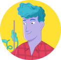

Ответственность
Unilever прекрасно осознает, какую важную роль в жизни людей играют маркетинг и реклама. Эти инструменты могут оказать сильное влияние на человека, меняя его поведение и мироощущение.
Как лидирующая глобальная компания, которая ежедневно коммуницирует с огромным количеством людей, мы подходим к этому особенно ответственно. Поэтому реклама товаров и инноваций Unilever — это возможность найти общий язык с потребителями по важным для них вопросам.
Недавно мы презентовали новую стратегию устойчивого развития и повышения качества жизни — Компас. Ее главная задача – оказать положительное влияние более чем на 1 млрд человек к 2030 году. Одна из ее миссий (социальная) нацелена на повышение осознанности потребителей, улучшение здоровья и самочувствия людей, внесения вклада в борьбу за справедливость и формирование более инклюзивного и многообразного общества.
Для Unilever это возможность внести свой вклад в борьбу с очень важной и серьезной проблемой — кибербуллингом
Кибербуллинг
cущ. заимст.
Это травля в сети, когда волна агрессии от многих людей направляется на одного человека или компанию.
Такого вида агрессия наносит ничуть не меньший урон человеку, чем обычный буллинг.

Насилие в сети и за её пределами — недопустимо. Важно бороться с кибербуллингом и пресекать его.
И вместе мы справимся
+
Unilever совместно с VK запускает контент-хаб и горячую линию помощи всем жертвам кибербуллинга.
Проект призван объединить всех, для кого насилие в сети и за её пределами — недопустимо; и помочь пострадавшим.
С декабря 2021
по март 2022
по март 2022
На странице проекта будет размещено 15 материалов, которые в полной мере помогут разобраться с проблемой кибербуллинга.
Как можно помочь уже сейчас?
Всегда нужно начинать с себя
Стать тем, кто запускает волну травли, может стать каждый — и особенно тот, кто сам был ее жертвой или наблюдателем.
Остановиться если уже готовы выплеснуть агрессию
Возможно проблема может быть решена другим способом
Попросите помощи, если подверглись травле в интернете
Не нужно справляться с проблемой одному, вы можете так больше навредить себе
Испытывать негативные эмоции — нормально
Важно научиться их понимать и правильно анализировать, с этим поможет “дневник ваших эмоций”
Расскажите близким и друзьям, что кибербуллинг — проблема
Расскажите о собственном опыте или о проблеме в посте с желтым сердцем 💛 – символом акции
Не говорите “ничего страшного”
Став свиделем травли, равнодушие — путь к поражению